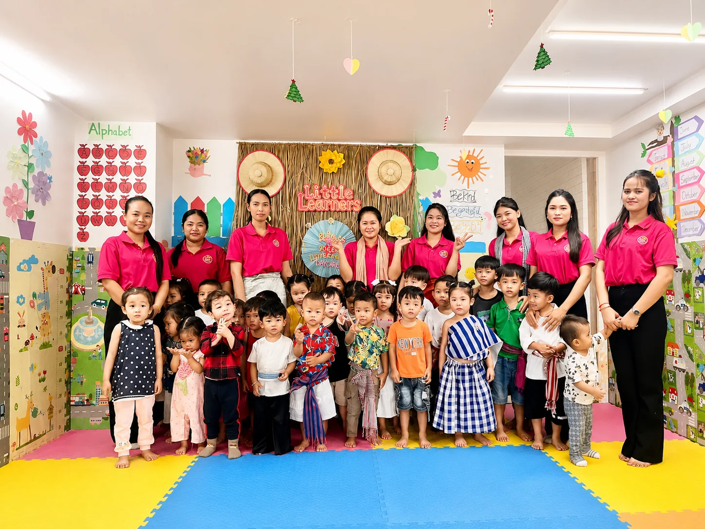
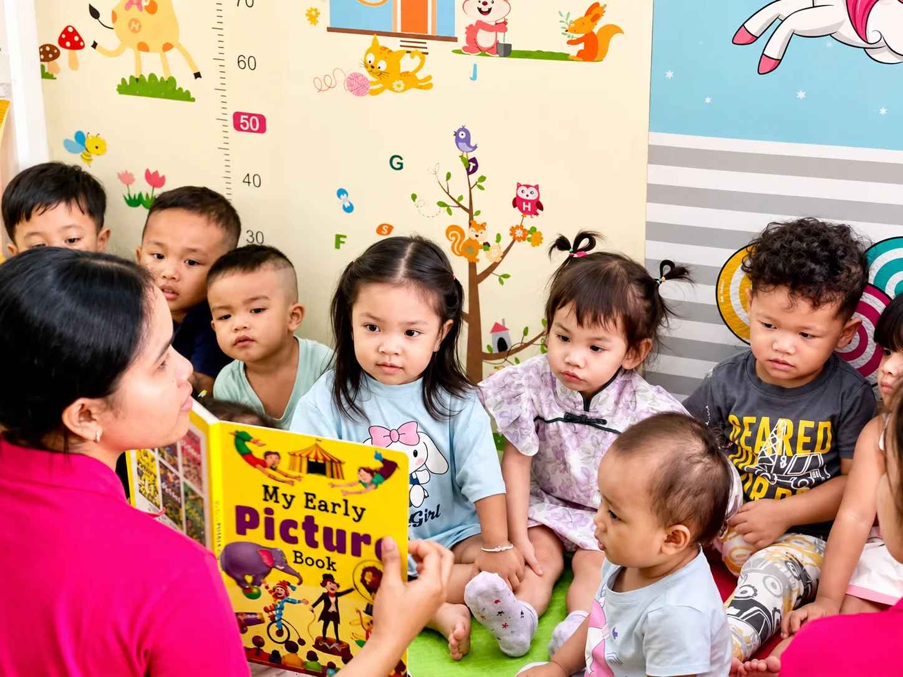
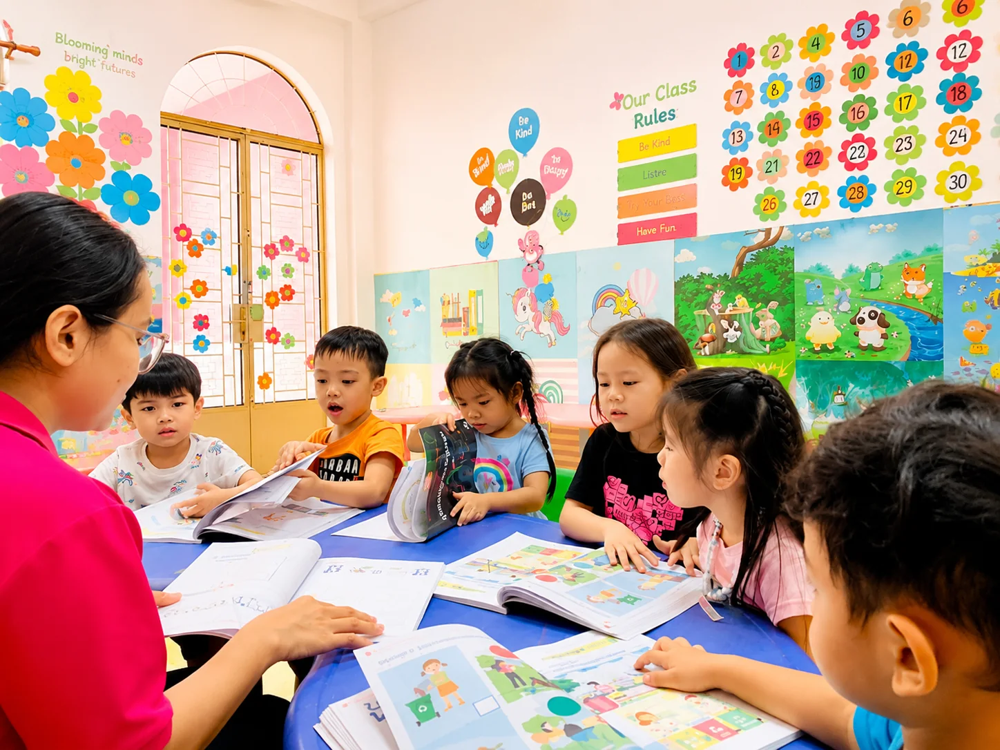
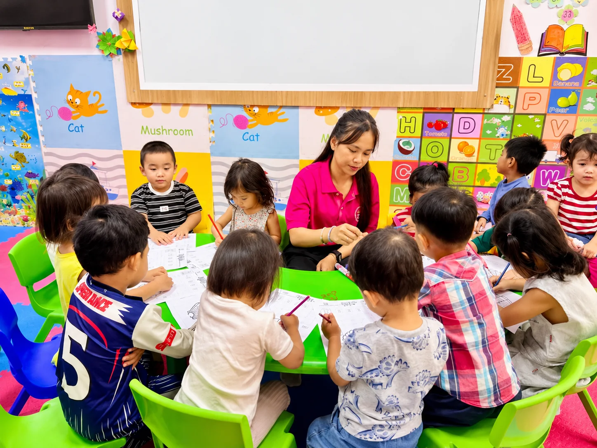
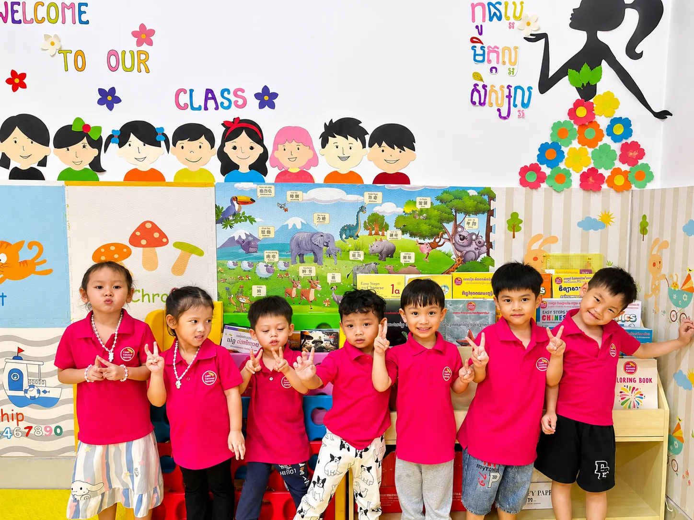
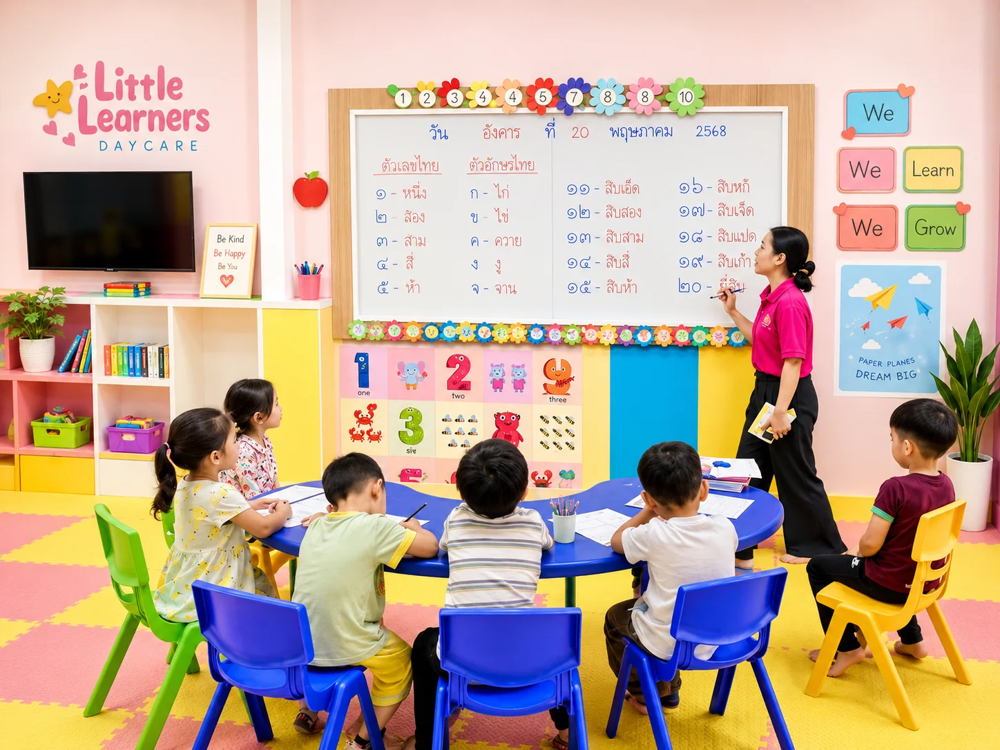
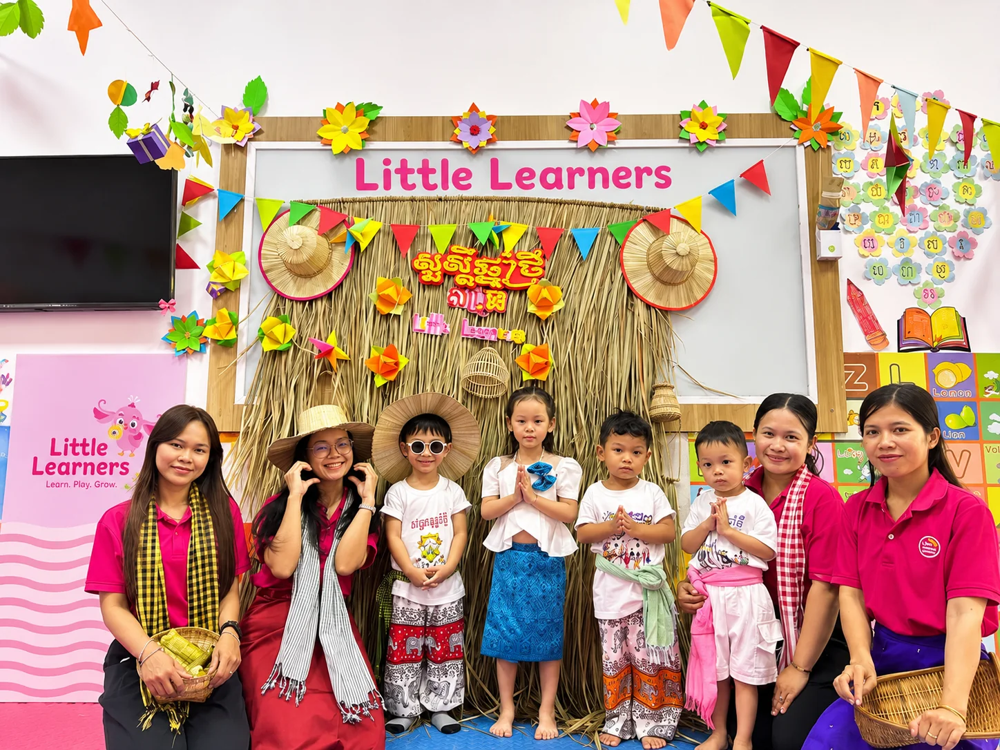
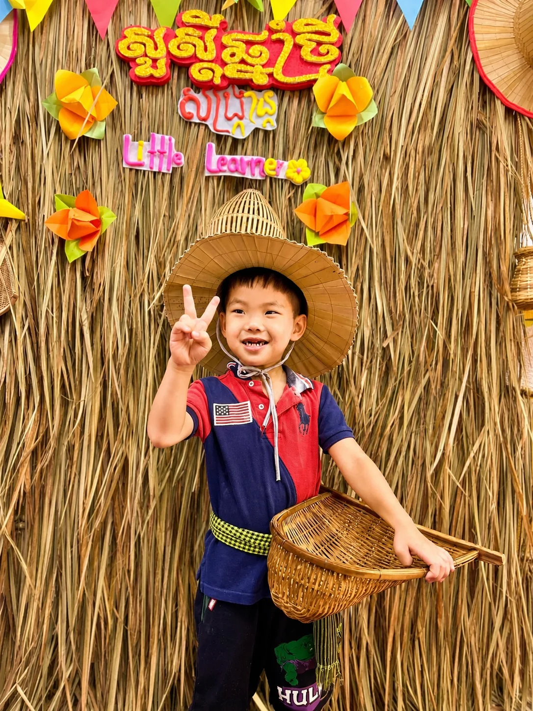

Caring & Supportive
Every child is seen and encouraged.
DAYCARE & PRESCHOOL IN PHNOM PENH
Little Learners provides caring daycare and preschool programs designed to support each child’s confidence, creativity, and healthy early development.


Every child is seen and encouraged.
Joyful activities with purpose.
Support for every early stage.
Find a space near your family.
OUR PROGRAMS
Thoughtfully planned days that give little learners the care, routine, friendship, and joyful discovery they need.
GENTLE BEGINNINGS
Comforting care and simple sensory experiences for our youngest learners.

Ages 2–3CURIOUS EXPLORERS
Play-based activities that grow language, social skills, and independence.

Age 3+READY TO BLOOM
Early learning that builds confidence, communication, and school-ready habits.
THE LITTLE LEARNERS WAY
Little Learners supports working families with caring daycare and early-learning programs in a safe, colorful, and engaging environment.
LEARNING WITH JOY
Our days make space for discovery, creativity, connection, and happy routines.
Supporting communication, movement, creativity, confidence, social interaction, and daily routines.
Guided learning comes alive through storytelling, music, drawing, movement, and exploration.
Teachers and caregivers give patient guidance and age-appropriate support every day.
WHY FAMILIES CHOOSE US
A thoughtful environment where children can be themselves, make friends, and grow at their own pace.
Find a Branch →Warm support throughout the day.
Made for playful exploration.
Full-day and half-day programs.
Learning that feels like fun.
OUR CARE TEAM
Our teachers and caregivers help children feel safe, supported, confident, and ready to learn through patient guidance and engaging daily activities.
Ask About Our Programs →
VISIT LITTLE LEARNERS
Three welcoming Little Learners locations serving families across Phnom Penh.



OUR DAYS IN PICTURES
A glimpse of meaningful play, learning, connection, and bright classroom moments.
A DAY AT LITTLE LEARNERS
Each day has a reassuring rhythm of welcome, learning, play, rest, and connection.
Daily routines may vary by program, age group, and branch.
START YOUR JOURNEY
Contact Little Learners to ask about programs, branch availability, and enrollment.
◒{kind=link}
{kind=link}
{kind=link}
{kind=link}
{kind=link}
{kind=link}